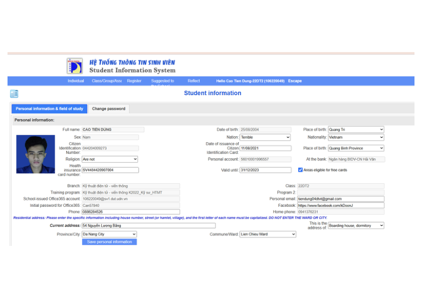

Professional Background
Bridging STEM Foundations, Embedded Systems, and Modern AI Architectures
I am Cao Tien Dung (Harry), a senior Computer Systems Engineering student at Da Nang University of Technology (DUT) with a cumulative GPA of 3.6 / 4.0.
My core technical domain bridges two deeply complementary disciplines: Embedded Systems & Hardware (STM32, ESP32, FPGA, RTOS, PCB layout) and Applied Artificial Intelligence (Computer Vision, YOLOv8/v11, PyTorch, Edge AI with OpenVINO). I received the 2nd Prize in University-level Scientific Research in Applied Artificial Intelligence for engineering high-reliability intelligent systems.
Concurrently, I operate as a Multidisciplinary AI Trainer & Technical Specialist for global enterprise evaluation platforms (such as DataAnnotation, Outlier, and Turing-type frameworks). I design rigorous test suites, evaluate advanced code-generation LLMs (Claude Code, GPT models), verify algorithmic complexity, and author high-precision mathematical documentation in LaTeX.
Experience & Education
Multidisciplinary AI Trainer & Technical Specialist
- STEM Specialist (Sciences & Engineering): Evaluated and resolved complex technical problems spanning engineering, advanced mathematics, physics, and programming logic to train and align next-generation AI reasoning models.
- LaTeX Specialist (Scientific Document Authoring): Formulated, audited, and formatted advanced mathematical equations, algorithmic proofs, and technical reports using clean, publication-grade LaTeX structural syntax.
- Code Evaluation & Comparative Benchmarking (Claude-Bench / CodeEval): Designed strict test suites, unit test execution harnesses, and rubrics to benchmark accuracy, algorithmic time/space complexity, and instruction-following fidelity of frontier code generation models (Claude Code, GPT-4).
Da Nang University of Technology (DUT)
- Program Code: 1064051 | 180 Credits Comprehensive Engineering Curriculum.
- Specialized in Computer Architecture, Real-Time Systems, Microprocessors (ARM/STM32), and Edge AI deployment.
- Project-Based Learning (PBL) Lead on automated sorting, smart vehicle monitoring, and biometric security systems.
University Student Information & Verification Record:

Relevant University Coursework & Academic Foundations
Academic curriculum directly mapped to skills in Applied AI, Embedded IoT, and Advanced AI Evaluation (Turing, Outlier, DataAnnotation)
Essential for mathematical proofs, STEM reasoning models, and algorithmic complexity verification.
- Calculus I & II (Giải tích 1, 2) Grade: 3.0
- Linear Algebra (Đại số tuyến tính) Grade: 3.0
- Applied Probability & Statistics (Xác suất thống kê) Grade: 3.0
- Numerical Methods (Phương pháp tính) Grade: 3.0
- Engineering Mathematics (Toán chuyên ngành) Grade: 3.0
- General Physics I, II & Practical Labs Grade: 4.0 / A
Core background in model architectures, vision pipelines, neural networks, and digital signal processing.
- Artificial Intelligence (Trí tuệ nhân tạo) Grade: 4.0 / A
- Deep Learning (Học sâu) Core AI
- Digital Image Processing (Xử lý ảnh) Computer Vision
- Signals & Systems & Laboratory Grade: 3.0 & 4.0
- Digital Signal Processing & Lab (DSP) Signal Theory
- Scientific Research Methodology Grade: 4.0 / A
Hands-on mastery of microcontrollers, RTOS, digital hardware design, and sensor communication.
- Microprocessor Engineering & Lab (STM32/ARM) Grade: 3.5 & 4.0
- Embedded Systems (Hệ thống nhúng) Grade: 3.0
- Digital Electronics & Lab (Kỹ thuật số) Grade: 3.0 & 4.0
- Hardware Description Languages (HDL & FPGA) Grade: 3.0
- Real-Time Systems (Hệ thống thời gian thực - RTOS) Embedded Core
- PBL 4: Embedded Systems Project Grade: 4.0 / A
Crucial for code evaluation benchmarks, test-harness design, and multi-threaded systems programming.
- Programming Techniques (C/C++ Core) Grade: 3.0
- PBL 1: Systems Programming Project Grade: 4.0 / A
- Data Structures & Algorithms (CTDL & GT) Algorithms
- Computer Architecture & Organization Architecture
- Computer Networks & Data Communications Grade: 4.0 / A
- Software Engineering (Công nghệ phần mềm) Systems Design